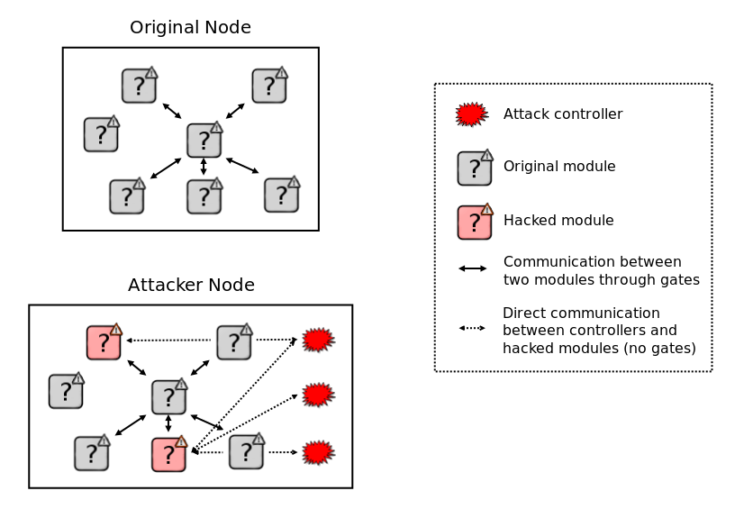
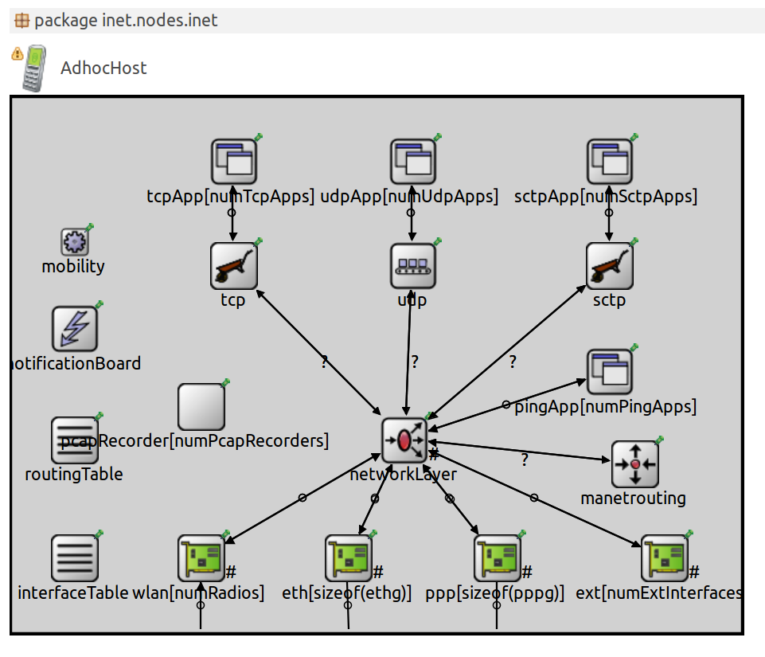
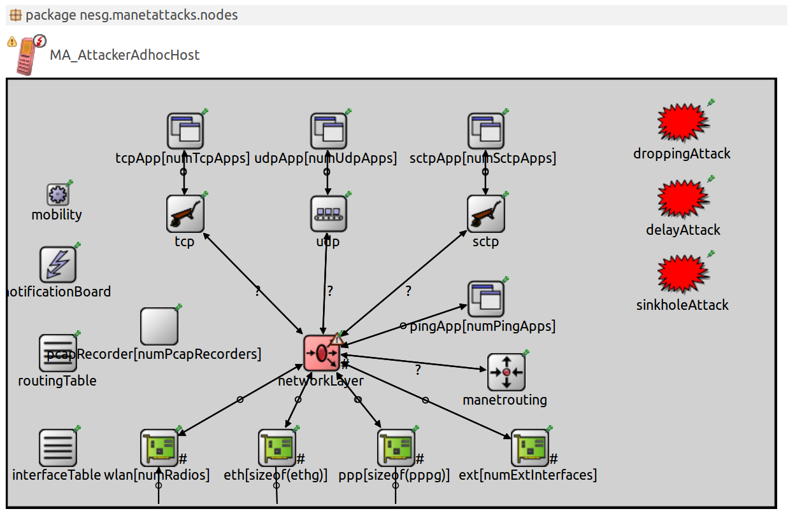

This documentation is released under the Creative Commons license
This documentation is released under the Creative Commons licenseThe NETA framework uses the same idea as OMNeT++, i.e., modules that communicate by message passing.
The general idea of the present framework is to develop new nodes which can strike attacks.
In order to do this, the implemented attacks are managed in what we called attack controllers.
These controllers affect to one or more modules of INET framework through control
messages sending parameters of the developed attacks. Therefore, these modules should be
conveniently modified to obey the orders of the control messages. These modified modules
are named hacked modules. The creation of an attacker can be summarized as: (i) add to
the associated .ned file the controllers related with the attacks to be executed, (ii) create the
associate control messages and, (iii) substitute the modules these attack controllers need to use
by the correspondent hacked modules.
In Fig. 1 we can see the comparison between a normal node and an attacker node. The normal node is composed of simple and compound modules which communicate between them. The attacker node is composed of the same number of modules and its communications and the attack controller modules. However, some modules have been substituted by the correspondent hacked modules to allow the execution of the attacks trigger by the included attack controllers.
|  |
In Fig. 2 we present an example of the module that compose a normal node (AdhocHost) and
its correspondent attacker node (MA_AdhocHost) .
|  |  |
| (a) Modules of AdhocHost node | (b) Modules of MA AdhocHost node |
The folders of this framework has a specific structure we describe in the following (we only mention the specific folders of this framework excluding the folders in common with OMNeT++):
For more information about the NETA framework architecture, please read the NETA Framework manual.
This documentation is released under the Creative Commons license